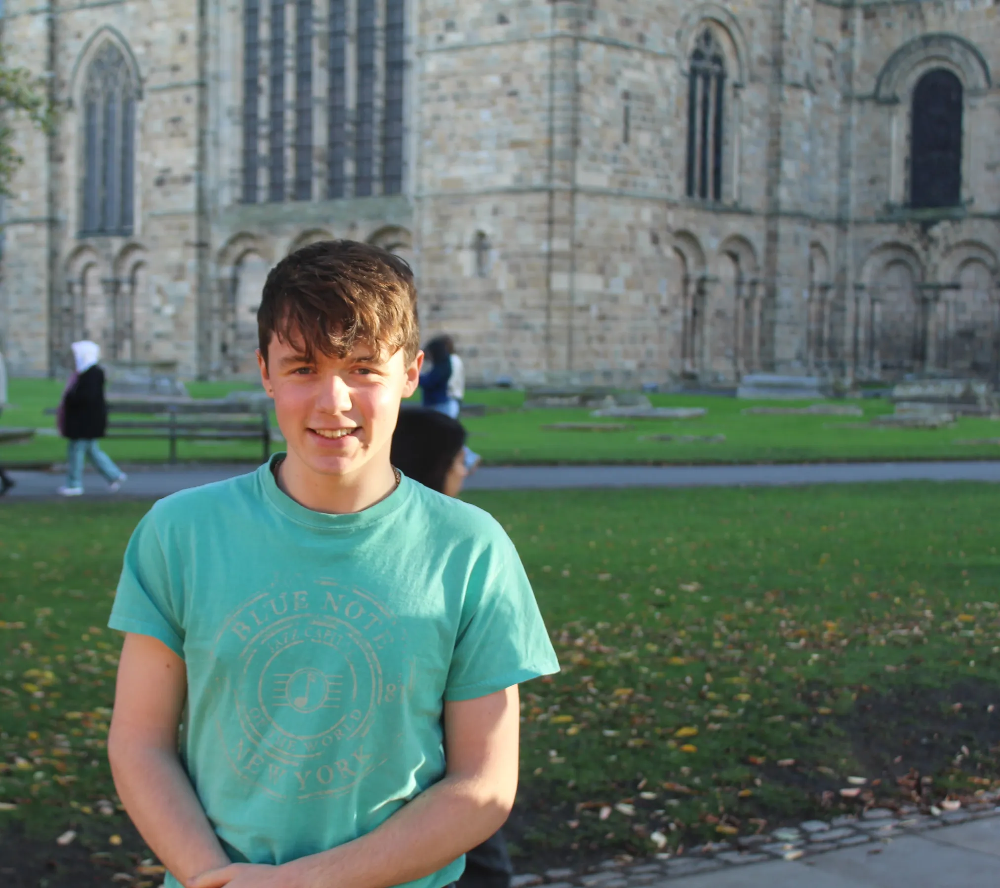
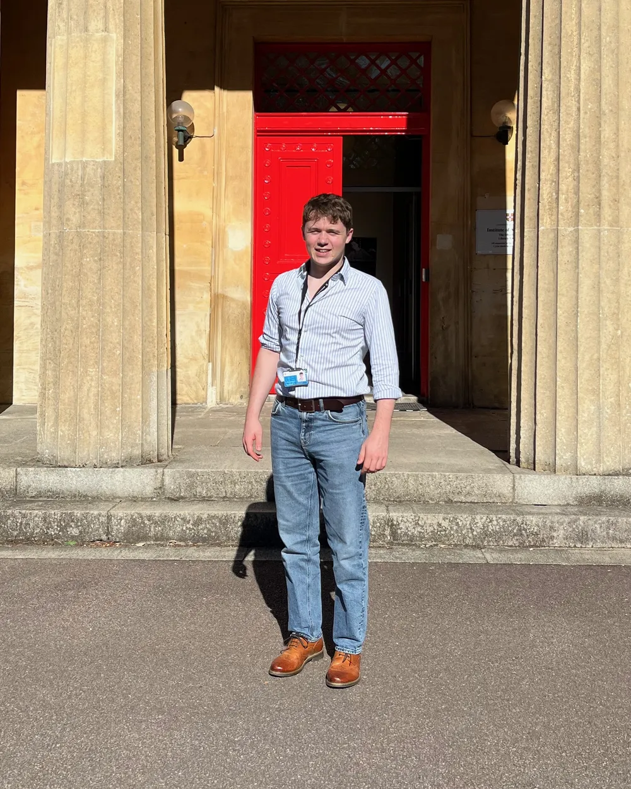
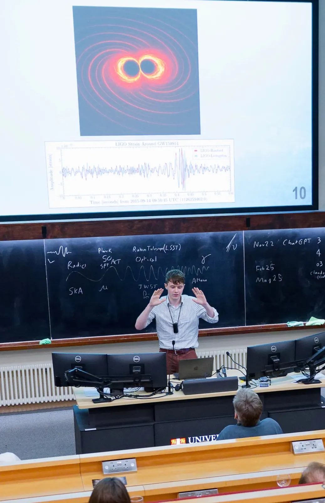
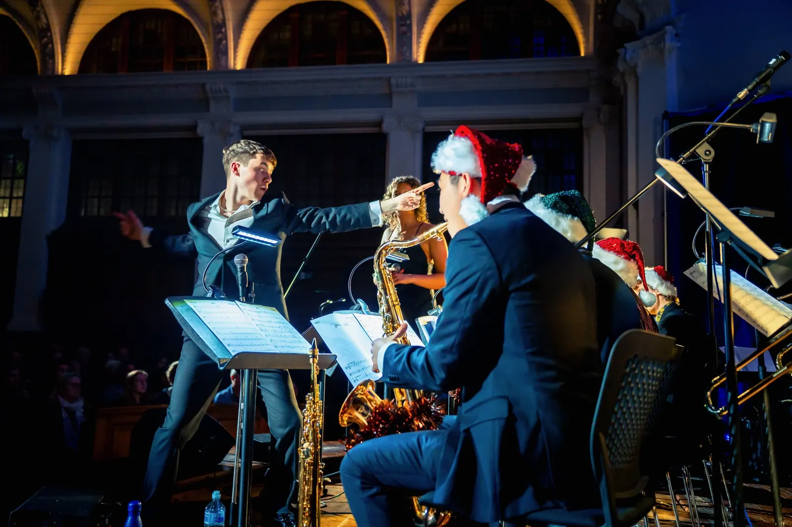

Publications
3
Papers published during my degree, once as co-lead author, with 130+ citations.


I'm an astrophysicist who uses surveys of galaxies to constrain the physics of their evolution.
I finished my MPhys in Physics and Astronomy at Durham University in 2026, graduating at the top of my class with a thesis on a small survey of Extreme Emission Line Galaxies in the fields of VLT/MUSE IFU observations, under the supervision of Prof Alastair Edge.
I now dedicate most of my time to studying the chemical and population-level stellar evolution of galaxies around and earlier than cosmic noon, largely using population-level surveys. I have a particular interest in large spectroscopic surveys, integral field spectroscopy, and low-mass/metal-poor galaxies.
In my spare time, I'm a pianist and orchestrator, writing for commercial and jazz ensembles.
I study the chemical and population-level stellar evolution of galaxies around and earlier than cosmic noon.
I began an undergraduate MPhys at the University of Durham in 2022, finishing in 2026 with First Class Honours. Following publication at the end of my first year, I joined Astrophysics at Oxford University as a research intern for the summer of 2024 in the Galaxies Research Group, where I developed HPC tools for HI detection with MeerKAT; I then joined the IoA at Cambridge as a research intern at the end of my third year to work on simulation-based inference for gravitational waves. My master's thesis at Durham's Centre for Extragalactic Astronomy involved a small VLT/MUSE survey of extreme emission line galaxies, investigating their extreme star formation and environment.
I hold the Durham Physics Department's D A Wright Astronomy Prize (2026, for top performance on the MPhys Physics & Astronomy track), the Advanced Astrophysics Prize (2026), Florence Nightingale Prize (2025, Astrolab), and Discovery Skills (2023, 1st-year laboratory) award. While at Durham I worked under Will Yeadon on the impact of generative AI on education, which won the IoP 2026 Jackson Medal. Alongside this I co-chaired the Physics SVC and sat on the Board of Studies, with additional involvement in outreach to local schools.
After receiving 8 PhD offers across Europe, I recently began PhD research at Cambridge funded by the STFC; my other offers included a Hintze Scholarship (Oxford), the Cavendish Laboratory (Cambridge), Max Planck, and Leiden University.
I'm a pianist and orchestrator, with writing described as both “outstanding” and “crackling” by JazzWise magazine.
Clients for my work include the Metropole Orkest, Danish Radio Big Band and the Royal Netherlands Air Force Orchestra. Commission venue highlights include the London Palladium, the Barbican Centre, Cheltenham Festival, Ronnie Scott's, and the Konzerthaus Berlin.
In 2025 I won the Au Arranging Prize and Durham's Full Palatinate for ‘Outstanding Contribution to Music’; in 2026 I then won the Half Palatinate for ‘Best Musical Director’. I am currently a Cambridge choral scholar at Gonville and Caius College.
I. Astrophysics

I began an undergraduate MPhys at the University of Durham in 2022, finishing in 2026 with First Class Honours. Along the way I've worked across astronomy from LIGO to MeerKAT, at Oxford, Cambridge and Durham.
MPhys thesis · Centre for Extragalactic Astronomy, Durham
Extreme Emission Line Galaxies in the Fields of Massive Clusters with VLT/MUSE
Supervised by Prof Alastair Edge. A small VLT/MUSE survey of extreme emission line galaxies, investigating their extreme star formation and environment, and building a representative population of nearby EELGs as spectral analogues for high-redshift JADES candidates.
Research intern · Institute of Astronomy, Cambridge
Machine Learning Tools for Gravitational Wave Mismodelling
Supervised by Dr James Alvey. Simulation-based inference for gravitational waves, in collaboration with researchers at UVA and MPA Garching, with follow-up work with the LVK collaboration.
Research intern · Galaxies Research Group, Oxford
Source Extraction for Radio-Detected HI Galaxies
Supervised by Prof Matt Jarvis and Dr Catherine Hale. Built HPC tools for HI detection with MeerKAT, looking ahead to large surveys with the SKA.
Astrolab · Durham University
A Comprehensive Photometric Model for the W-Type Binary GW Cep
Supervised by Profs Mark Swinbank & Alastair Edge. Awarded the Florence Nightingale Prize.
Summer research · Durham University
The Impact of AI in Physics Education: A Comprehensive Review from GCSE to University Levels
With Dr Will Yeadon, on the impact of generative AI on education. This work won the IoP 2026 Jackson Medal.
3
Papers published during my degree, once as co-lead author, with 130+ citations.
MPhys Physics & Astronomy, First Class in all years, with a final-year average of 82%. Courses included General Relativity & Structure Cosmology, Radiative Astrophysics & Advanced Instrumentation, Star & Galaxy Formation, and Condensed Matter Physics.
Co-chair of the Physics Staff-Student Committee and student representative on the Board of Studies, with additional involvement in outreach to local schools.
After receiving 8 PhD offers across Europe, including a Hintze Scholarship (Oxford), the Cavendish Laboratory (Cambridge), Max Planck and Leiden University, I began PhD research at Cambridge funded by the STFC.
I'm a pianist, orchestrator and engraver. Clients for my work include the Metropole Orkest, Danish Radio Big Band and the Royal Netherlands Air Force Orchestra, and I was previously an in-house arranger for NYJO.
In 2025 I won the Au Arranging Prize and Durham's Full Palatinate for ‘Outstanding Contribution to Music’; in 2026 I then won the Half Palatinate for ‘Best Musical Director’. I am currently a Cambridge choral scholar at Gonville and Caius College.

At Durham I directed the Jazz Orchestra (2023–24), the Big Band (2024–26) and the Studio Orchestra (2026). With the Big Band I led two national tours, including 2025's ‘Unspoken Voices’, which highlighted marginalised voices in jazz, and was awarded over £8,000 in arts grants.
I headlined at Ronnie Scott's in 2023, and represented NYJO to HRH Prince Edward the same year.
Contact
For research, commissions and everything else.